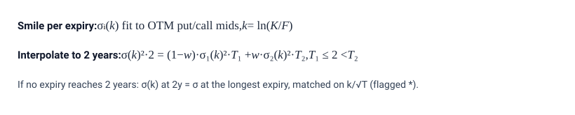
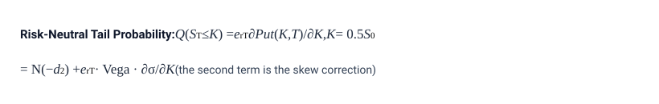
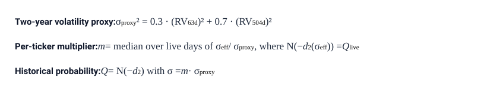

Tracks the market-implied (risk-neutral) probability of a 50% decline over a rolling 2-year horizon, read directly from the prices of long-dated put options. Prices as of market close {{ market_date }}.
| Ticker | Spot Price | 50% Strike (K) | Target (2Y Hence) | Expiries Used | 2Y ATM IV | 2Y IV at K | Risk-Neutral Q(S ≤ K) | Lognormal + CAPM Drift P(S ≤ K) | ||||||
|---|---|---|---|---|---|---|---|---|---|---|---|---|---|---|
| {{ row.ticker }}{% if row.is_fallback %}*{% endif %} | ${{ "%.2f"|format(row.spot) }} | ${{ "%.2f"|format(row.target_strike) }} | {% if row.no_options %}No listed options yet — no market-implied probability | {% else %}{{ row.expiration }} | {{ row.source_exp }} | {{ "%.1f"|format(row.atm_iv * 100) }}% | {{ "%.1f"|format(row.wing_iv * 100) }}% | {{ "%.2f"|format(row.prob_Q * 100) }}% | {{ "%.2f"|format(row.prob_P * 100) }}% | {% endif %}|||||
* Hover for details: either no listed option reaches two years (the smile is extended from the longest expiry), or some option prices are last trades rather than bid/ask mids.
This tracker estimates the probability that a constituent equity or benchmark index closes 50% or more below its current spot price at the conclusion of a rolling 2-year forward window (T = 2.0 years, K = 0.50 × S0). Note that this evaluates an endpoint loss at t + 2.0 years; it does not measure path-dependent interim drawdowns where an asset drops 50% and subsequently rebounds. The evaluation window rolls forward continuously to ensure uniform comparability across historical periods.
The dashboard tracks prominent mega-cap enterprise and consumer technology equities (NVDA, GOOG, MSFT, AAPL, AMZN, META, TSLA) and special purpose vehicles (SPCX), alongside the three principal US equity benchmarks through their primary exchange-traded funds (ETFs):
Because these ETFs maintain near 1:1 price tracking with their underlying indices, option-implied tail calculations on the ETFs reflect systemic broad-market crash probabilities.
The risk-free interest rate (r) is mapped dynamically to the active market yield of the 2-Year US Treasury note (Yahoo ticker: 2YY=F). For dates prior to the launch of 2YY=F futures in mid-August 2021, the historical rate is set to the contemporaneous 2-Year Constant Maturity Treasury yield (about 0.15%). In the live series, the forward price F is not assumed but read from the options themselves via put-call parity (F = K + erT(C − P) at near-the-money strikes), so expected dividends and borrowing costs come from the market. In the historical series, F = S0e(r−q)T with q equal to each ticker's trailing 12-month dividend yield.
Each trading day, for the listed option expiries on either side of two years, the engine takes bid/ask midpoint prices of out-of-the-money puts and calls, converts each to an implied volatility, and fits a smooth volatility smile σ(k) in log-moneyness k = ln(K/F). The two smiles are interpolated in total implied variance (σ2T) to exactly T = 2 years. When no listed option reaches two years (newly listed stocks), the longest usable smile is extended by holding it fixed in standardized moneyness k/√T; these rows are flagged.

The probability comes from the Breeden–Litzenberger relation: the slope of the put price with respect to the strike is the discounted probability of finishing below that strike. Evaluated on the fitted smile at K = 0.5 × S0, this captures the full downside skew. Plugging a single volatility into the Black-Scholes N(−d2) would not: using at-the-money volatility understates the tail, and using the volatility at the 50% strike overstates it, because it ignores how fast volatility changes across strikes. Q reflects the market price of crash insurance and so includes investors' risk aversion; it is not a forecast of real-world frequency.

Free data sources do not store historical option chains, so history is estimated from each stock's own price movements and then calibrated to the live series. Because two-year option volatility moves far less than short-run volatility, the proxy blends recent and long-run realized variance (30% weight on 63 trading days, 70% on 504 trading days, consistent with volatility reverting with a half-life of roughly six months). Each live day records σeff, the single volatility that reproduces that day's option-implied probability; a per-ticker multiplier, the median ratio of σeff to the proxy over the live period, scales the entire history so that the two series meet at the seam. The multiplier captures each ticker's volatility risk premium and put skew, treated as constant over time. The historical series is sampled on the 15th of each month, then daily from October 2026 until live option data begins (marked on the chart). Recently listed stocks (SPCX, ANT) have too little trading history and begin with the live data.

The physical column P is a scenario that keeps the shape of the market-implied distribution but replaces the risk-free growth rate with a CAPM expected return (μ = r + β × ERP − q, with an Equity Risk Premium of 4.5%). Shifting the distribution up by β × ERP per year is equivalent to evaluating Q at the lower strike K·e−β·ERP·T. Because it retains the risk-neutral skew, P is still likely to overstate the real-world probability.
One conceptual flaw -- or challenge -- in the metric is that, if a share price fell 50%, the likelihood of a further 50% fall might be quite low, when we might want to score that as a bubble burst. The chart as given provides the likelihood of a further drop, and assuming efficient markets (which you should not), the current price summarizes all known information, so the present metric would be a sensible summary of the likelihood of a bursting bubble. If, instead, we want to assess the probability that the bubble will or has burst, a more sensible metric is the probability of a 50% fall from the peak. Using the same methodology already described, but with the target share price being half of the 52 week high, you can see the output of that computation in the chart below. If you are mostly thinking "Are my existing investments safe-ish?", you would use the current price as a target, while if you are asking "Are we in the middle of a meltdown?", judging based on the 52 week high makes more sense. Both metrics are computed by the same code (build_site.py daily, backfill_history.py for history).
Live values come from the same option smile as the main chart, evaluated at K = 0.5 × (52-week high). For history, the effective volatility at that strike is adjusted for skew: live runs record the effective volatility at strikes from 30% to 90% of spot, and the backfill uses each ticker's ratio of effective volatility at K/S to that at 50%. When a stock is already more than 50% below its high, the probability exceeds 50%. For stocks listed less than a year ago, the "52-week high" is the high since listing.
| Ticker | Spot Price | 52-Week High | Off High | Strike (½ High) | Risk-Neutral Q(S ≤ K) | Lognormal + CAPM Drift P(S ≤ K) |
|---|---|---|---|---|---|---|
| {{ row.ticker }}{% if row.high_52w_partial %}†{% endif %} | ${{ "%.2f"|format(row.spot) }} | ${{ "%.2f"|format(row.high_52w) }} | {{ "%.1f"|format(row.drawdown * 100) }}% | ${{ "%.2f"|format(row.target_strike52) }} | {{ "%.2f"|format(row.prob_Q52 * 100) }}% | {{ "%.2f"|format(row.prob_P52 * 100) }}% |